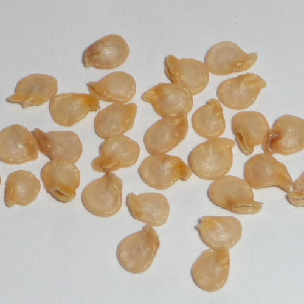

Habanero peppers are usually grown in tropical areas. So you will have to plant your habanero pepper seeds somewhere where there's a lot of sun and warm temperature.To keep the soil warm you will need a plastic mulch .Plant your habanero seeds after a frost . 2 weeks after is recommended. To start you will have to plant your seeds an inch and a half in soil then you will have to have your habanero plant inside for approximately 8 to 10 weeks before planting outside.When outside make sure to water and put a fourth of tablespoon of nitrogen.In five weeks you should have a blooming plant full of peppers. Make sure to pick red and orange peppers . Enjoy !